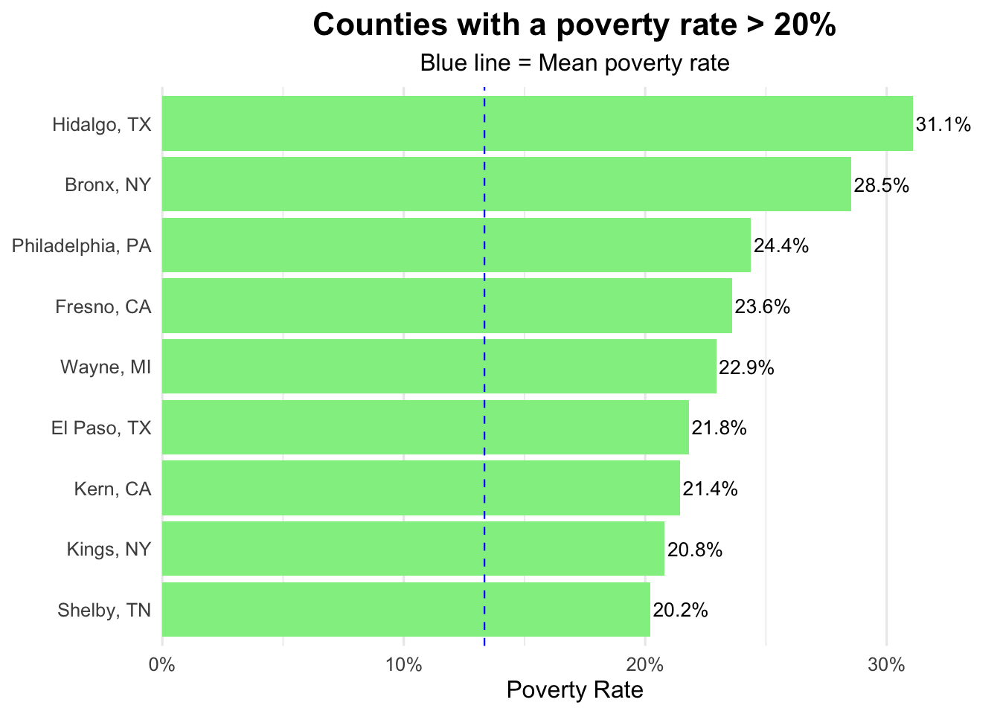
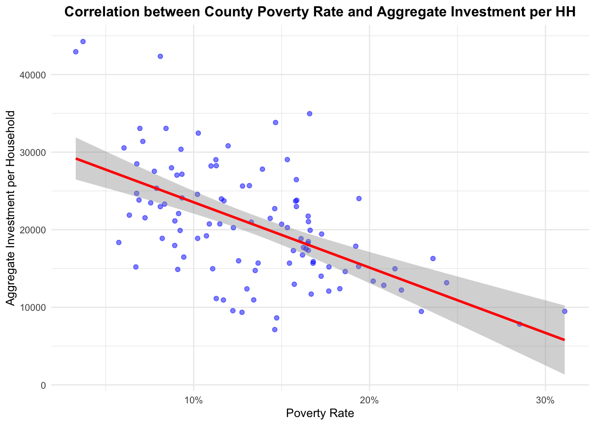

── Attaching core tidyverse packages ──────────────────────── tidyverse 2.0.0 ──
✔ dplyr 1.1.4 ✔ readr 2.1.5
✔ forcats 1.0.0 ✔ stringr 1.5.1
✔ ggplot2 3.5.2 ✔ tibble 3.3.0
✔ lubridate 1.9.4 ✔ tidyr 1.3.1
✔ purrr 1.1.0
── Conflicts ────────────────────────────────────────── tidyverse_conflicts() ──
✖ dplyr::filter() masks stats::filter()
✖ dplyr::lag() masks stats::lag()
ℹ Use the conflicted package (<http://conflicted.r-lib.org/>) to force all conflicts to become errors
library(tigris)
To enable caching of data, set `options(tigris_use_cache = TRUE)`
in your R script or .Rprofile.
library(sf)
Linking to GEOS 3.13.0, GDAL 3.8.5, PROJ 9.5.1; sf_use_s2() is TRUE
library(scales)
Attaching package: 'scales'
The following object is masked from 'package:purrr':
discard
The following object is masked from 'package:readr':
col_factor
# Read your Excel file from the data/ folderdata <-read_excel("data/dc_capital_flows.xlsx", sheet ="Top 100 Counties")# Quick preview of the datahead(data)
# A tibble: 6 × 13
county_name state countyfips in_DMV county_pop poverty_perc
<chr> <chr> <chr> <lgl> <dbl> <dbl>
1 Los Angeles CA 06037 FALSE 10081570 0.158
2 Cook IL 17031 FALSE 5198275 0.153
3 Harris TX 48201 FALSE 4646630 0.165
4 Maricopa AZ 04013 FALSE 4328810 0.146
5 San Diego CA 06073 FALSE 3316073 0.128
6 Orange CA 06059 FALSE 3168044 0.110
# ℹ 7 more variables: agg_investment_perhh <dbl>, federal_perhh <dbl>,
# mission_lending_perhh <dbl>, small_business_lending_persbemp <dbl>,
# ACII_loans_peremp <dbl>, HMDA_SF_perSFhh <dbl>, HMDA_MF_perMFhh <dbl>
Warning: Using `size` aesthetic for lines was deprecated in ggplot2 3.4.0.
ℹ Please use `linewidth` instead.

Interpretation
The dataset selected contains information of average scaled investment in 100 largest U.S. counties, plus DC region jurisdictions. Prior to delving into any geospatial analysis, we wanted to understand the heterogeneity of poverty in the top 100 countries. Given that the average poverty rate is 13.3%, we decided to start by taking a look at those countries that have a rate of 20% or higher. To do so, we just present a chart listing those counties and their state, together with a blue dashed line stating the mean poverty rate.
In order to visualize the poverty rate in the 100 largest U.S. counties, we decided to map it.This allows the reader to observe the location of the counties, as well as their poverty rate. Caveat: we have excluded Honolulu, HI, due to its visibility in the map. As for the results, we can observe some of the poorest counties, listed under the first visualization (e.g: Hidalgo, TX and Fresno, CA). However, there are some drawbacks from this map: it is difficult to observe smaller counties (e.g.: Bronx, NY) due to the scale. A more interesting approach would be to visualize counties per state, focusing on each at a time. Nonetheless, this is an interesting mapping exercise, and this map serves as an initial overview.
Third Visualization
ggplot(data, aes(x = poverty_perc, y = agg_investment_perhh)) +geom_point(alpha =0.5, color ="blue") +geom_smooth(method ="lm", se =TRUE, color ="red") +scale_x_continuous(labels = scales::percent_format(accuracy =1)) +labs(title ="Correlation between County Poverty Rate and Aggregate Investment per HH",x ="Poverty Rate",y ="Aggregate Investment per Household" ) +theme_minimal(base_size =10) +theme(plot.title =element_text(hjust =0.5, face ="bold"))
`geom_smooth()` using formula = 'y ~ x'

Interpretation
Following our analysis, we wanted to delve into the relationship between counties with higher poverty rates and the level of aggregate investment per household (measured in USD). The slope of the regression line shows that as poverty grows, investment per household falls. The points are spread out, showing variation, but the trend is clear. Poverty seems to be a meaningful predictor of investment levels, and counties with higher poverty generally attract or sustain less household-level investment. As such, the poorer the household -on average- the more budget constrained and thus the lower willingness to invest. ```
After looking at correlations between poverty rates in each county and Correlation between County Poverty Rate and Aggregate Investment per HH, we analyze if the racial percentage of each household is correlated with aggregate investment in each household (measured in USD). Interestingly, the households with more white racial percentage show higher aggregate investment by household whereas households with more black racial percentage has lower aggregate investment. The mean of the aggregate investment of top 100 counties is approximately 20724 USD. We found this analysis limited since the racial category is not standarized.
###Narrative
Throughout this exercise, we have explored poverty levels at the county level, exploring the heterogeinity in poverty outcomes among the 100 largest countries. To provide a broader picture, we decided to map the counties, and have a first glimpse at the location and poverty rates in a broader sense. After this, we explored potential correlations between said poverty levels and variables such as aggregate investment per household, and found that, as expected, investment per household falls as poverty grows. Considering the multidimensional determinants of aggregate investments per household, we decided to explore this variable varies when comparing it among different races.
Answer for Stretch question Part 1.4
After adding the .gitignore file, we typed git add “our data”, and this is what the Rstudio showed us:
Martins-MacBook-Air:assignment04 martinhernanbarros$ git add dc_capital_flows.xlsxThe following paths are ignored by one of your .gitignore files: dc_capital_flows.xlsx hint: Use -f if you really want to add them. hint: Turn this message off by running hint: “git config advice.addIgnoredFile false” Martins-MacBook-Air:assignment04 martinhernanbarros$
Which shows that our data file has been correctly ignored by .gitignore file.